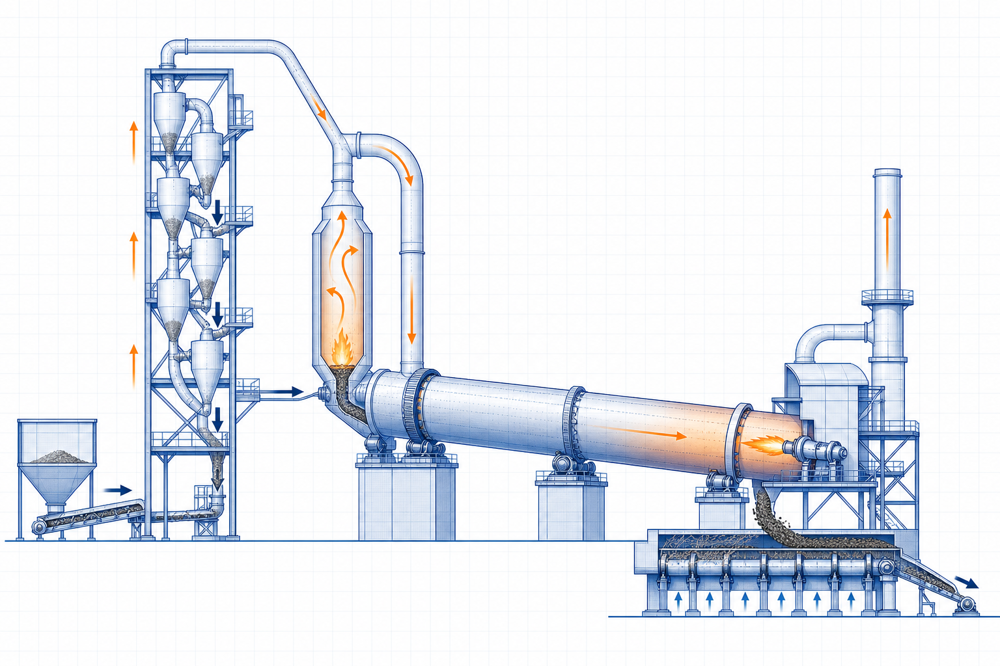

Cement-process guide
Clinker Cooler Performance and Heat Recovery
Clinker Cooler Performance and Heat Recovery is a focused cement-process guide within the Industrial Calculation Hub knowledge library. It explains the engineering purpose, physical basis, governing inputs, process or equipment interfaces, common failure mechanisms and the limits of preliminary use.

- Content type
- Cement-process guide
- Canonical ID
- ICH-CAN-037
- Source basis
- Cement-kiln and energy-efficiency literature
- Last reviewed
- 31 August 2026
What is Clinker Cooler Performance and Heat Recovery?
A clinker cooler rapidly cools hot clinker from the rotary kiln, recovers sensible heat to secondary and tertiary air, transports clinker and protects downstream equipment. Grate design, air distribution, clinker bed depth, crusher operation, cooler leakage and control philosophy determine both thermal efficiency and stable kiln operation.
Hot clinker transfers heat to cooling air through the bed. The hottest recovered air is valuable combustion air; excess or bypass air leaving to dedusting represents lost heat. Uneven clinker distribution creates hot zones, short-circuiting and poor recuperation. Mechanical condition of grates, seals and crushers affects both availability and gas flow.
Why the whole operating system matters
Clinker Cooler Performance and Heat Recovery should be assessed across its full thermal, fluid or process boundary. A nominal nameplate duty rarely captures fouling, leakage, cycling, changing fuel or feed, temperature gradients and control interactions. The engineering objective is stable, safe and verifiable performance over the credible operating range.
Terms and reference conditions
- Design condition
- The specified flow, pressure, temperature, composition and equipment line-up used for sizing.
- Operating envelope
- The range of startup, normal, turndown, fouled and upset conditions that equipment must tolerate.
- Performance evidence
- Traceable measurements and inspection records that show the system operates as intended.
Working principle and governing relationships
Hot clinker transfers heat to cooling air through the bed. The hottest recovered air is valuable combustion air; excess or bypass air leaving to dedusting represents lost heat. Uneven clinker distribution creates hot zones, short-circuiting and poor recuperation. Mechanical condition of grates, seals and crushers affects both availability and gas flow.
Operating relationship 1
cooler efficiency depends on clinker inlet temperature, outlet temperature and recovered-air temperature. Use values from the same mass, energy and pressure basis before drawing a conclusion.
Operating relationship 2
bed depth and grate speed influence residence time and air-clinker contact. Use values from the same mass, energy and pressure basis before drawing a conclusion.
Operating relationship 3
secondary-air temperature affects kiln fuel demand and flame stability. Use values from the same mass, energy and pressure basis before drawing a conclusion.
Operating relationship 4
cooler pressure and leakage affect gas balance and dedusting load. Use values from the same mass, energy and pressure basis before drawing a conclusion.
State the mass, energy and pressure basis used for each relationship. Differences between dry and wet gas, actual and normal volume, lower and higher heating value, or one pressure reference and another can produce misleading apparent performance changes.
Operating cases that should be compared
Operating case 1. cooler efficiency depends on clinker inlet temperature, outlet temperature and recovered-air temperature. Compare normal operation with the condition most likely to upset this relationship: start-up, turndown, peak production, fouling, temperature change, new feed or fuel, and maintenance line-up. State which instrument or inspection confirms that the system remains within its safe and useful range.
Operating case 2. bed depth and grate speed influence residence time and air-clinker contact. Compare normal operation with the condition most likely to upset this relationship: start-up, turndown, peak production, fouling, temperature change, new feed or fuel, and maintenance line-up. State which instrument or inspection confirms that the system remains within its safe and useful range.
Operating case 3. secondary-air temperature affects kiln fuel demand and flame stability. Compare normal operation with the condition most likely to upset this relationship: start-up, turndown, peak production, fouling, temperature change, new feed or fuel, and maintenance line-up. State which instrument or inspection confirms that the system remains within its safe and useful range.
Operating case 4. cooler pressure and leakage affect gas balance and dedusting load. Compare normal operation with the condition most likely to upset this relationship: start-up, turndown, peak production, fouling, temperature change, new feed or fuel, and maintenance line-up. State which instrument or inspection confirms that the system remains within its safe and useful range.
Data needed for a defensible review
- clinker temperature profile, cooler outlet temperature and cooler air temperatures
- grate speed, bed depth, pressure zones, fan flows and drive loads
- secondary/tertiary air flow, kiln oxygen, fuel rate and clinker production
- seal condition, grate wear, clinker size distribution and crusher status
- dust carryover, cooler vent flow and material-spillage observations
Record 1. clinker temperature profile, cooler outlet temperature and cooler air temperatures. Confirm how and when this information was measured, because a transient plant condition can make a correct instrument value unsuitable for the intended calculation.
Record 2. grate speed, bed depth, pressure zones, fan flows and drive loads. Confirm how and when this information was measured, because a transient plant condition can make a correct instrument value unsuitable for the intended calculation.
Record 3. secondary/tertiary air flow, kiln oxygen, fuel rate and clinker production. Confirm how and when this information was measured, because a transient plant condition can make a correct instrument value unsuitable for the intended calculation.
Record 4. seal condition, grate wear, clinker size distribution and crusher status. Confirm how and when this information was measured, because a transient plant condition can make a correct instrument value unsuitable for the intended calculation.
Record 5. dust carryover, cooler vent flow and material-spillage observations. Confirm how and when this information was measured, because a transient plant condition can make a correct instrument value unsuitable for the intended calculation.
Practical review and operating method
- Step 1. maintain even clinker distribution at the cooler inlet
- Step 2. trend zone pressures and temperatures to identify blocked or leaking areas
- Step 3. coordinate grate speed and fan control with clinker production and kiln stability
- Step 4. inspect mechanical seals, grate plates and crusher gaps before thermal performance falls sharply
- Step 5. compare recovery performance at equivalent clinker rate and kiln conditions
Repeat measurements at the operating condition that most challenges the system. Preserve the line-up, calibration state, instrument position and relevant equipment condition so later data can distinguish real improvement from changed measurement conditions.
Controls, commissioning and operating discipline
Control 1. maintain even clinker distribution at the cooler inlet. Assign an owner, evidence source and review trigger. This turns the engineering recommendation into a maintained operating requirement rather than an isolated commissioning note.
Control 2. trend zone pressures and temperatures to identify blocked or leaking areas. Assign an owner, evidence source and review trigger. This turns the engineering recommendation into a maintained operating requirement rather than an isolated commissioning note.
Control 3. coordinate grate speed and fan control with clinker production and kiln stability. Assign an owner, evidence source and review trigger. This turns the engineering recommendation into a maintained operating requirement rather than an isolated commissioning note.
Control 4. inspect mechanical seals, grate plates and crusher gaps before thermal performance falls sharply. Assign an owner, evidence source and review trigger. This turns the engineering recommendation into a maintained operating requirement rather than an isolated commissioning note.
Control 5. compare recovery performance at equivalent clinker rate and kiln conditions. Assign an owner, evidence source and review trigger. This turns the engineering recommendation into a maintained operating requirement rather than an isolated commissioning note.
Example engineering case
A cooler with falling secondary-air temperature and high vent gas flow may have a thin-bed channel, leaking seal or excessive grate speed. Increasing fan flow can raise dust and may worsen short-circuiting unless the clinker distribution problem is addressed.
The useful result is not merely an explanation of the observed symptom. It is a documented cause-and-effect chain that identifies the controlling mechanism, the measurement needed to confirm it and the operating or design change that can be verified after implementation.
Typical applications
Clinker Cooler Performance and Heat Recovery is used in cement clinker production, pyroprocessing heat recovery and high-temperature material cooling systems. Site conditions, fuel or material composition, emissions requirements, water quality, operating hours, maintenance access and safety duty must be evaluated for each installation.
Failure modes and early warning signs
- air short-circuiting through thin or uneven bed reduces heat recovery
- blocked grates create local overheating and mechanical damage
- excess leakage raises dedusting volume and reduces useful secondary air
- oversized hot clinker can damage crushers and conveyors
Warning 1
air short-circuiting through thin or uneven bed reduces heat recovery. Investigate the physical cause before changing a control setpoint, fan speed, fuel rate or equipment item.
Warning 2
blocked grates create local overheating and mechanical damage. Investigate the physical cause before changing a control setpoint, fan speed, fuel rate or equipment item.
Warning 3
excess leakage raises dedusting volume and reduces useful secondary air. Investigate the physical cause before changing a control setpoint, fan speed, fuel rate or equipment item.
Warning 4
oversized hot clinker can damage crushers and conveyors. Investigate the physical cause before changing a control setpoint, fan speed, fuel rate or equipment item.
Trend the variable closest to the governing mechanism: temperature difference, pressure loss, oxygen, flow, composition, vibration, shell temperature, conductivity or emission concentration. One alarm alone rarely identifies the cause.
Maintenance, safety and management of change
Before intervention, control stored pressure, high temperature, rotating equipment, steam, chemical, electrical, confined-space and hot-work hazards. A modification to fuel, material, water chemistry, ducting, nozzles, fan, refractory, control logic or setpoint can change the basis of performance. Update the operating procedure, drawings, test results and training material together.
Acceptance and reassessment
At release, confirm the measured duty against the specified operating envelope and the relevant protection limits. Record the deviation, uncertainty and mitigation if a design assumption remains unverified.
Reassessment item 1. cooler efficiency depends on clinker inlet temperature, outlet temperature and recovered-air temperature. Define the operating change—such as fouling, new fuel, added production, seasonal temperature or equipment repair—that should trigger a repeat check.
Reassessment item 2. bed depth and grate speed influence residence time and air-clinker contact. Define the operating change—such as fouling, new fuel, added production, seasonal temperature or equipment repair—that should trigger a repeat check.
Reassessment item 3. secondary-air temperature affects kiln fuel demand and flame stability. Define the operating change—such as fouling, new fuel, added production, seasonal temperature or equipment repair—that should trigger a repeat check.
Reassessment item 4. cooler pressure and leakage affect gas balance and dedusting load. Define the operating change—such as fouling, new fuel, added production, seasonal temperature or equipment repair—that should trigger a repeat check.
Frequently Asked Questions
Why is clinker cooler performance important to kiln fuel use?
Recovered hot air returns energy to combustion. Lower recovered-air temperature generally means more fuel is required for the same kiln duty.
Which inputs should be confirmed for Clinker Cooler Performance and Heat Recovery?
Data needed for a defensible review clinker temperature profile, cooler outlet temperature and cooler air temperatures grate speed, bed depth, pressure zones, fan flows and drive loads secondary/tertiary air flow, kiln oxygen, fuel rate and clinker production seal condition, grate wear, clinker size distribution and crusher status dust carryover, cooler vent flow. Confirm the source, condition and measurement basis for each input before treating a calculated or selected value as reliable.
How should Clinker Cooler Performance and Heat Recovery be reviewed in practice?
Practical review and operating method Step 1. maintain even clinker distribution at the cooler inlet Step 2. trend zone pressures and temperatures to identify blocked or leaking areas Step 3. coordinate grate speed and fan control with clinker production and kiln stability Step 4. inspect mechanical seals, grate plates and crusher gaps. Record the actual operating line-up and repeat the review at the condition most likely to challenge performance.
What warning signs deserve early attention?
Failure modes and early warning signs air short-circuiting through thin or uneven bed reduces heat recovery blocked grates create local overheating and mechanical damage excess leakage raises dedusting volume and reduces useful secondary air oversized hot clinker can damage crushers and conveyors Warning 1 air short-circuiting through thin or uneven bed reduces. A trend linked to the physical mechanism is more useful than waiting for a single visible failure.
What evidence supports acceptance?
Acceptance and reassessment At release, confirm the measured duty against the specified operating envelope and the relevant protection limits. Record the deviation, uncertainty and mitigation if a design assumption remains unverified. Reassessment item 1. cooler efficiency depends on clinker inlet temperature, outlet temperature and recovered-air temperature. Define the operating change—such as fouling. Keep the records traceable so later maintenance or a process change can be compared with the original basis.
When should Clinker Cooler Performance and Heat Recovery be reassessed?
Reassess it after a change in duty, throughput, process material, temperature, pressure, geometry, maintenance condition, control logic or a recurring abnormal trend. The original result is valid only for the conditions it represented.
Can a typical value or handbook rule be used for final design?
Only as a preliminary screen. Final decisions for Clinker Cooler Performance and Heat Recovery need the actual component or system data, applicable standard, supplier limits and qualified engineering review.
Where should an engineering investigation begin?
Start by defining the system boundary and current operating condition, then compare measured evidence with the design intent. Address the controlling mechanism before changing capacity, setpoints or hardware.
References
- Rotary Kilns. Supplied source library.
- Integrated Cement Energy Award material. Supplied source library.
Original educational summary informed by the supplied literature. It does not reproduce protected source text, figures, tables or standards material.